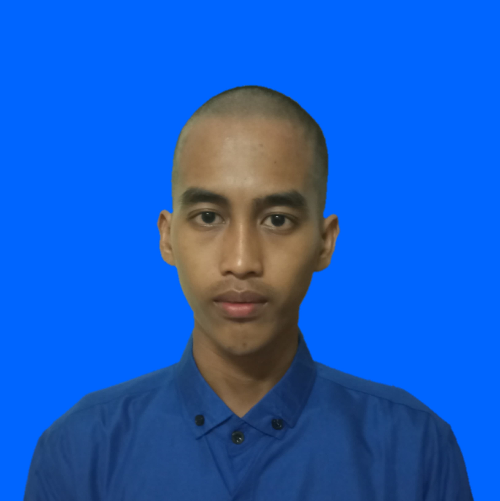

| Ryan Hidayat 240411100163 |
|---|
| Hi, perkenalkan nama Ryan Hidayat. Saya adalah mahasiswa Teknik Informatika di Universitas Trunojoyo Madura (UTM). Saya lahir di Bangkalan pada tanggal 19 Maret tahun 2004. Saat ini saya tinggal di Asrama UTM dengan teman" saya. Jika kalian membutuhkan sesuatu dari saya, Kalian bisa menghubungi 085815231599. |